1. 최초 설치 (처음 한 번)
새 스틱에는 파노체크 프로그램(펌웨어)을 USB로 한 번 넣어야 합니다. 그 다음부터는 앱에서 블루투스로 업데이트됩니다.
준비물
- M5StickS3 스틱, 데이터가 되는 USB-C 선 (충전 전용 선은 안 됨)
- 안드로이드폰(크롬) 또는 컴퓨터(윈도우·맥의 크롬·엣지). 아이폰은 설치가 안 됩니다.
📱 안드로이드폰으로 설치
- 스틱을 USB-C 선으로 폰에 꽂습니다. (C-C 선, 또는 OTG 젠더)
- 폰 크롬에서 jung86.github.io/panotrio 를 엽니다. 앱에서는 홈 [설치 · 업데이트] → [설치 페이지 열기].
- 설치 모드로 바꾸기: 스틱 옆면 전원 버튼을 약 2초 누르고, 스틱 안의 초록 불이 깜빡이면 손을 뗍니다. (화면은 꺼져도 됩니다)
- [폰으로 설치] → 목록에서 스틱(USB JTAG/serial) 선택 → 허용.
- 막대가 끝까지 차고 "✅ 설치 끝"이 나오면 선을 빼고 전원 버튼을 한 번 눌러 켭니다.
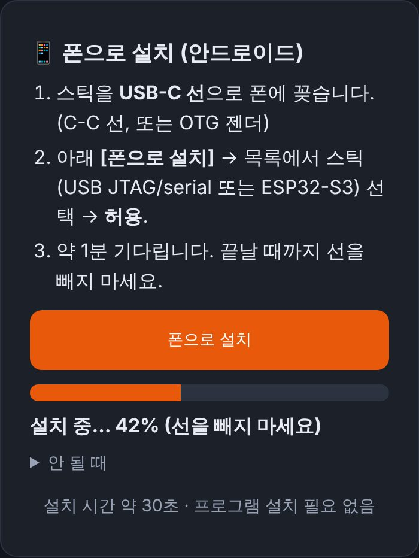
폰에 따라 USB 기기를 못 잡는 경우가 있습니다. 그럴 땐 컴퓨터로 설치하세요.
💻 컴퓨터로 설치
- 스틱을 USB-C 선으로 컴퓨터에 꽂습니다.
- 크롬이나 엣지에서 설치 페이지를 열고 설치 버튼 → 목록에서 스틱 포트 선택 → INSTALL.
- 약 30초 뒤 끝나면 선을 뺍니다.
2. 앱 열기 · 활성화
- 안드로이드는 크롬에서 jung86.github.io/panotrio/app.html 을 엽니다. 아이폰은 Bluefy 앱 안에서 엽니다.
- 앱 첫 화면의 [📲 홈 화면에 앱 설치](또는 크롬 메뉴 ⋮ → 홈 화면에 추가)를 누르면 다음부터 아이콘으로 바로 열립니다.
- 활성화: 새 스틱은 잠겨 있습니다. 스틱을 연결한 뒤(3번) 앱의 [📨 활성화 요청 보내기]로 제작자에게 카톡을 보내고, 답장으로 온 활성화 링크를 누른 뒤 스틱을 연결하면 끝납니다.
3. 준비와 연결
스틱은 블루투스로, 전원공급기는 USB 데이터선으로 휴대폰에 연결합니다.
- 휴대폰 블루투스와 위치(GPS)를 켭니다. 안드로이드는 위치가 꺼져 있으면 스틱을 못 찾습니다.
- 안드로이드는 크롬으로 엽니다. 삼성 인터넷·카톡 안 브라우저는 안 됩니다. 아이폰은 Bluefy.
- 스틱을 켜고 앱의 [스틱 연결 (블루투스)] → 파노체크-XXXXXXXX를 고릅니다. 한 번 연결해 두면 다음부터는 앱을 열 때 저절로 붙습니다 (브라우저가 지원할 때. 안 붙으면 버튼을 누르세요).
- (선택) 전원공급기는 휴대폰 USB-C ↔ DPS-150 Micro USB(DPS100은 PC COMM 단자) 데이터선으로 잇고, 파노측정 화면의 ⚡ [연결]을 누릅니다.
4. ★ 작동 기준 (언제 측정되나요?)
- 스틱을 메인터넌스에 물립니다. 모터 가까이, 흔들리지 않게 단단히 고정해야 진동이 정확히 전해집니다.
- 모터를 돌립니다. 스틱이 진동 감도(기본 40 mg)보다 센 진동을 연속으로 느끼면 "모터가 돈다"고 인식합니다.
- 측정 대기 시간(기본 2.5초) 동안 진동이 계속 충분히 있어야 측정을 시작합니다. 스틱 화면에 MEASURING 2.5 s처럼 남은 시간이 줄어듭니다.
- 대기 중 진동이 끊기면(약 1.5초) 처음으로 돌아가 다시 기다립니다. 모터가 켜질 때의 흔들림은 재지 않으려는 것입니다.
- 측정이 끝나면 파노(Hz)가 나오고, 모터가 같은 속도로 도는 동안 계속 새로 잽니다.
- 모터가 멈추거나 속도가 바뀌면 HOLD: 마지막 값이 화면에 남습니다.
주황 점선 = 진동 감도. 노란 칸(대기 시간) 동안 진동이 끊기면 다시 "대기"로 돌아갑니다.
약한 진동에도 시작되면 진동 감도 숫자를 올리고(둔감), 모터가 돌아도 시작이 안 되면 내리세요(민감).
5. 홈 화면
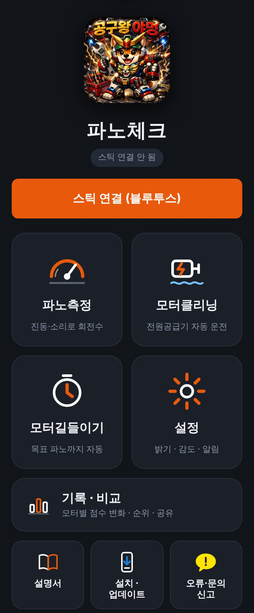
- 스틱 연결: 맨 위 상태 표시가 "연결됨"으로 바뀝니다.
- 파노측정: 파노·전원공급기·컨디션 점수·기록을 한 화면에서.
- 모터클리닝 / 모터길들이기: 전원공급기로 자동 운전.
- 설정: 스틱 밝기·감도·대기 시간·시계 등.
- 기록 · 비교: 모터별 점수 변화·순위·결과 카드 공유.
- 아래 작은 칸 세 개: 설명서(지금 이 페이지) · 설치 · 업데이트(스틱 펌웨어를 블루투스로 업데이트하거나 USB로 처음 설치) · 오류·문의 신고(카카오톡으로 제작자에게).
새 펌웨어가 있으면 연결 버튼 아래에 파란 알림 상자가 나옵니다 (→ 업데이트).
6. 파노측정
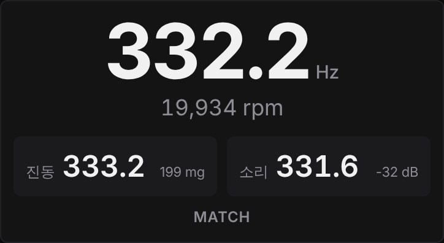
큰 숫자 = 파노(Hz), 아래 = rpm, 진동·소리 값, 맨 아래 상태
| 상태 | 뜻 |
|---|---|
| MATCH | 진동과 소리 값이 맞음. 가장 믿을 만한 값 |
| VIB OK MIC OK | 진동만 / 소리만 모드에서 잘 잡힘 |
| CLOSE MATCH? | 비슷하지만 조금 다름. 한 번 더 확인 |
| MIC WEAK | 소리가 약함. 스틱을 모터 가까이 |
| VIB ONLY | 소리는 못 잡고 진동만으로 낸 값 |
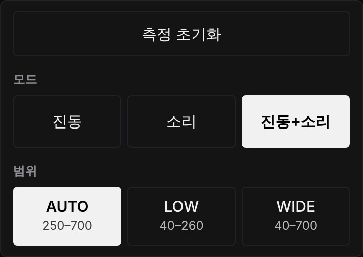
- 모드: 진동 / 소리 / 진동+소리(추천).
- 범위: AUTO 250~700 Hz(보통 모터), LOW 40~260 Hz(느린 모터), WIDE 40~700 Hz.
- ↺ 측정 초기화: 지난 결과를 지우고 다시 대기.
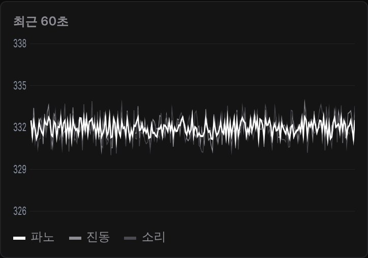
최근 60초 그래프: 흰색 파노, 주황 진동, 하늘색 소리. 선이 평평할수록 모터가 고르게 돕니다.
7. ⚡ 전원공급기 · 정역
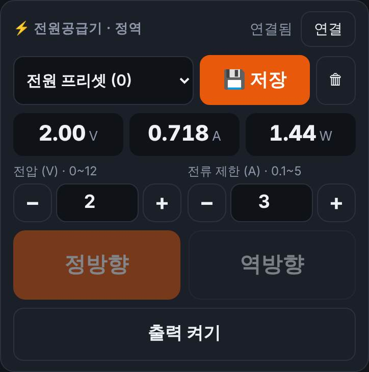
전원공급기 연결 (DPS-150 / DPS100)
| DPS-150 | DPS100 | |
|---|---|---|
| 데이터 단자 | Micro USB | PC COMM |
| 선 | 휴대폰 USB-C ↔ Micro USB 데이터선 | 휴대폰 USB-C ↔ PC COMM 단자에 맞는 데이터선 (제품에 안 들어 있음) |
| 전원 | PD 충전기(65W 이상, 20V)를 PD IN(USB-C)에. 입력은 하나만. | |
| 목록 | 첫 목록에 나옴 | 첫 목록에 없을 수 있음 → 닫으면 전체 목록 |
- 전원공급기에 PD 충전기를 꽂아 켜고, 데이터선으로 휴대폰(또는 PC)과 잇습니다.
- 파노측정 화면 ⚡ 카드의 [연결]을 누릅니다.
- 첫 목록에 전원공급기가 있으면 고르고 [연결]. DPS100이 안 보이면 [취소]를 누르세요. 모든 USB 장치 목록이 다시 뜹니다. 거기서 새로 생긴 장치(USB Serial, COM 포트 등)를 고릅니다.
- 카드에 "DPS-150 연결됨" 또는 "DPS100 연결됨"과 전압·전류 숫자가 나오면 성공입니다. 한 번 허락하면 다음부터 저절로 연결됩니다.
쓰는 법
- 위 숫자는 지금 실제 전압·전류·전력입니다.
- 전압(0~12 V)과 전류 제한(0.1~5 A)을 −/+로 정합니다. 전류 제한 기본값은 3.0 A입니다.
- 큰 [정방향] [역방향] 버튼으로 방향을 고르고 [출력 켜기].
- 💾 저장: 자주 쓰는 전압·전류를 프리셋으로.
8. 🩺 모터 컨디션 점수
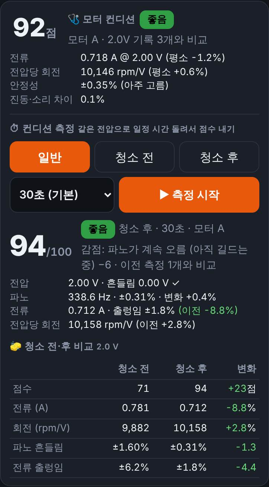
- 모터가 돌면 앱이 바로 100점 만점 점수를 냅니다. 85↑ 좋음 65↑ 보통 그 아래 점검 필요
- 전원공급기가 켜져 있으면 전류·전압당 회전까지, 없으면 파노 흔들림만으로 봅니다.
- 청소 전·후를 둘 다 재면 🧽 비교 표가 나옵니다 (점수, 전류, 회전, 흔들림).
- 전원 불안정 전압 흔들림·전류 제한(CC)·보호 동작이 있으면 점수를 내지 않습니다. 측정 불안정 파노가 튀면 스틱을 다시 단단히 물리세요.
⏱ 버튼 하나로 측정
- 스틱을 모터에 물리고, 파노측정 화면 ⚡ 카드에서 전압을 정해 둡니다 (예: 2.0 V).
- 🩺 카드 아래의 큰 버튼 [🧽 청소 전], [✨ 청소 후], [▶ 그냥 측정] 중 하나를 누릅니다.
- 앱이 출력 켜기 → 3초 뒤 측정 → 점수 → 출력 끄기까지 알아서 합니다. 휴대폰을 안 봐도 점수를 소리로 읽어 주고 진동으로 알려 줍니다 (좋음 1번, 보통 2번, 점검 필요 3번).
- 스틱이나 전원공급기가 아직 연결 안 돼 있으면 같은 버튼이 먼저 연결 목록을 띄웁니다. 둘 다 목록을 골라야 하면 한 번 더 누르세요 (브라우저가 한 번에 목록 하나만 허락합니다).
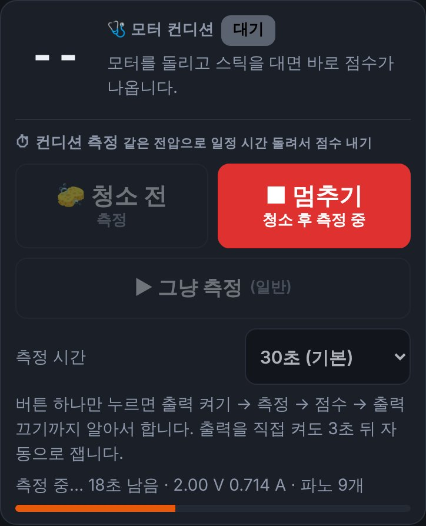
재는 동안 누른 버튼이 ■ 멈추기로 바뀝니다. 누르면 바로 멈추고 출력도 끕니다.
- 측정 시간은 15·30(기본)·60초·2분 중에서 고릅니다.
- 출력을 ⚡ 카드에서 직접 켜도 3초 뒤 자동으로 잽니다 (마지막으로 고른 청소 전·후 구분으로). 이때는 끝나도 출력을 끄지 않습니다. 다시 재려면 출력을 껐다 켜거나 전압을 바꾸세요.
- 출력을 켰는데 20초 동안 파노가 안 들어오면 출력을 끄고 알려 줍니다 (스틱이 모터에 안 닿았을 때).
스틱 화면 (펌웨어 2.6)
측정이 끝나 HOLD가 되면 큰 숫자 자리에 점수(PT)와 파노 Hz가 2.5초씩 번갈아 나옵니다. 처음 1초는 파노. 측정 중에는 화면 위쪽에 SCORE 92처럼 작게 나옵니다.
9. 기록
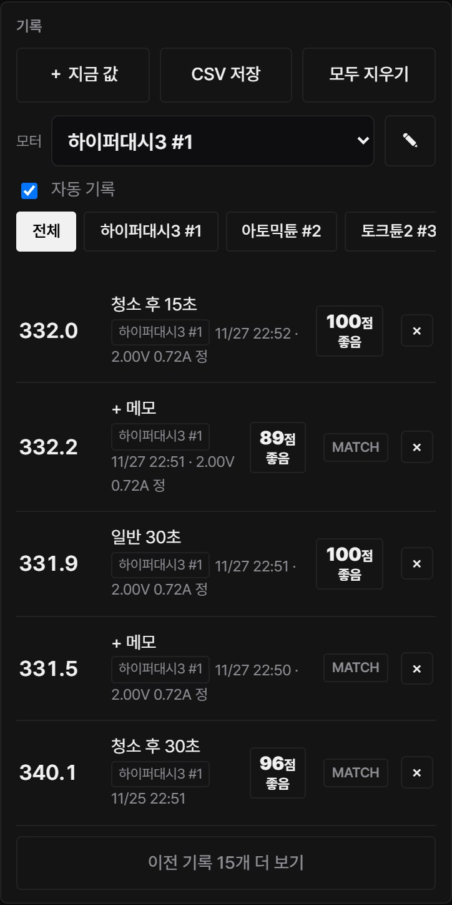
- 모터를 고르면 그 모터 이름으로 저장됩니다. ✎로 모터 추가·이름 바꾸기.
- "확실한 결과가 나올 때마다 자동 기록"을 켜 두면 알아서 쌓입니다. ＋ 지금 값은 손으로 저장.
- 기록마다 시간·rpm·전압·전류·방향과 🩺 점수 칩이 붙습니다. 메모를 눌러 글을 남길 수 있습니다.
- CSV 저장: 엑셀로 열 수 있는 파일로 내보냅니다 (점수·등급 열 포함).
기록은 이 휴대폰에만 저장됩니다. 가끔 CSV로 백업하세요.
📊 기록 · 비교 (홈 타일)
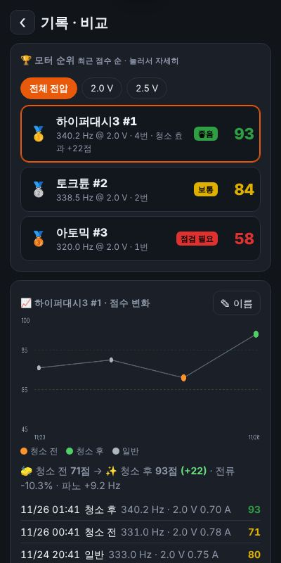
- 🏆 순위: 모터들을 최근 점수 순으로 보여 줍니다. 위 칩으로 전압을 고르면 같은 전압끼리만 비교합니다.
- 모터를 누르면 📈 점수 변화 그래프(주황 청소 전, 초록 청소 후)와 청소 효과(+점수)가 나옵니다. ✎ 이름으로 이름을 붙이거나 바꿉니다.
- 📤 결과 카드 공유: 점수·파노·전압·전류가 든 사진 한 장을 카톡 등으로 보냅니다. 컨디션 측정 결과 아래에도 있습니다.
- ⚠ 이상 경고: 돌리는 중 전류가 갑자기 25% 넘게 뛰거나 파노가 ±3% 넘게 흔들리면 빨간 알림과 음성으로 "점검하세요"를 알려 줍니다. 설정 → 이상 경고로 끌 수 있습니다.
10. 모터클리닝
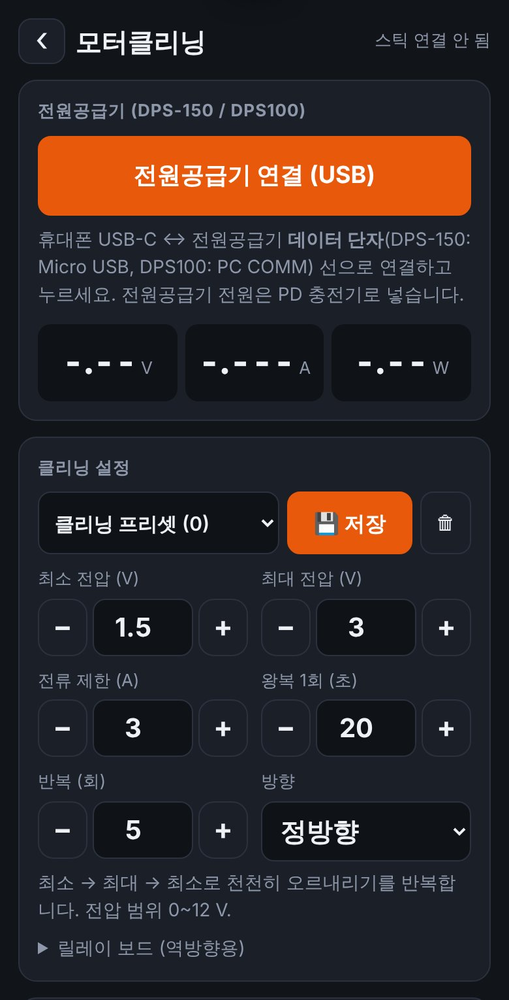
- 맨 위에서 전원공급기 연결 (USB).
- 최소 전압 → 최대 전압 → 최소로 부드럽게 오르내리기를 반복 횟수만큼 합니다. 왕복 1회(초)로 빠르기를 정합니다.
- 방향: 정방향 / 역방향 / 번갈아 (역방향은 릴레이 필요).
- 화면 아래에서 시작·정지, 진행 상황과 파노를 봅니다. 설정은 💾 프리셋으로 저장.
11. 모터길들이기
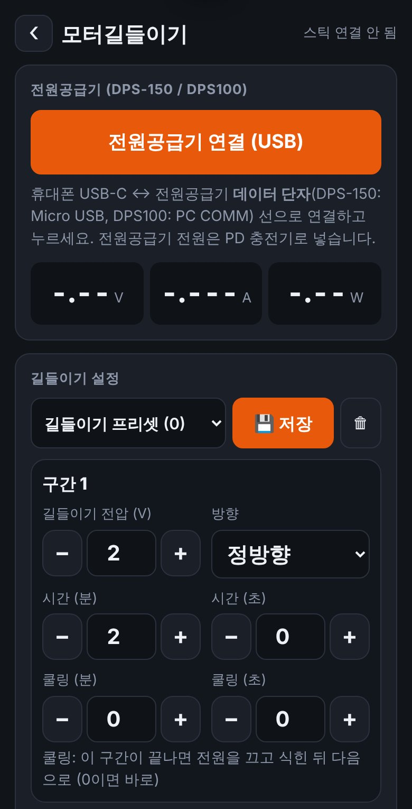
- 구간마다 전압, 방향(정/역/번갈아), 시간(분·초), 쿨링(분·초)을 정합니다. + 구간 추가로 최대 10개.
- 한 사이클: 구간 1 → 쿨링 → 구간 2 → … → 파노 측정 → 사이클 뒤 쉬기.
- 🎯 목표 파노 켜기: 목표에 닿으면 자동 정지 (최대 사이클은 안전 한도). 끄기: 정한 횟수만큼 반복.
- 사이클마다 잰 파노가 그래프로 쌓입니다. 구간 사이 전압은 1초에 걸쳐 부드럽게 바뀝니다.
12. 설정
처음 쓰는 휴대폰이나 처음 연결한 스틱은 항상 아래 기본값으로 시작합니다 (스틱에도 자동으로 저장). 그다음부터는 스틱을 연결하면 스틱에 저장된 설정을 불러옵니다. 바꾼 뒤 꼭 [스틱에 저장]을 누르세요.
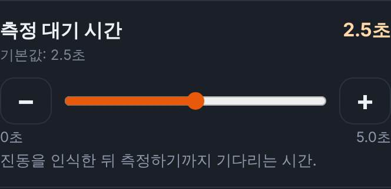
| 항목 | 기본값 | 설명 |
|---|---|---|
| 화면 밝기 | 67% | 스틱 화면 밝기 |
| 진동 감도 | 40 mg | 이보다 센 진동을 모터로 봄 |
| 소리 감도 | 보통 | 소리 값이 안 잡히면 높음 |
| 측정 대기 시간 | 2.5초 | 진동 인식 뒤 기다리는 시간 (0~5초) |
| 빨간 숫자 기준 | 550 Hz | 넘으면 숫자가 빨갛게 |
| 대기 모드 진입 | 30초 | 모터가 없으면 대기 화면으로 |
| 자동 꺼짐 | 10분 | 배터리일 때 꺼짐 |
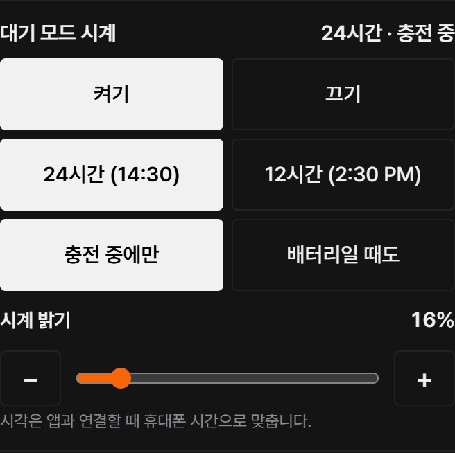
- 🕒 대기 모드 시계: 쉬는 동안 스틱에 시계만 나옵니다. 시간은 앱에 연결할 때 휴대폰에서 받아 옵니다. 12/24시간, 배터리일 때도 표시, 밝기.
- 블루투스 잠금: 이 휴대폰에서만 바꿀 수 있게 잠급니다. 풀 땐 스틱 앞(A)·옆(B) 버튼을 함께 3초.
- 앱 설정: 연결 알림 진동·소리, 측정 결과 음성 안내(기본 켬), 측정 결과 진동(기본 켬), 앱 열면 스틱 자동 연결(기본 켬), 화면 꺼짐 방지, 릴레이 연결됨.
- 헷갈리면 [기본값으로 되돌리기] → [스틱에 저장].
13. 업데이트
스틱 펌웨어 (블루투스)
- 새 버전이 있으면 스틱을 연결할 때 알림이 뜹니다 → [지금 업데이트].
- 언제든 홈 [설치 · 업데이트]에서 최신인지 확인하고 업데이트할 수 있습니다.
- 2~5분 걸립니다. 배터리 25% 이상(USB에 꽂혀 있으면 상관없음). 끊겨도 90초 안에 다시 연결하면 이어받고, 실패해도 스틱은 원래 버전으로 켜집니다.
- 블루투스 업데이트가 안 되는 스틱(2.0 전 버전)은 1. 최초 설치처럼 USB로 한 번 설치합니다.
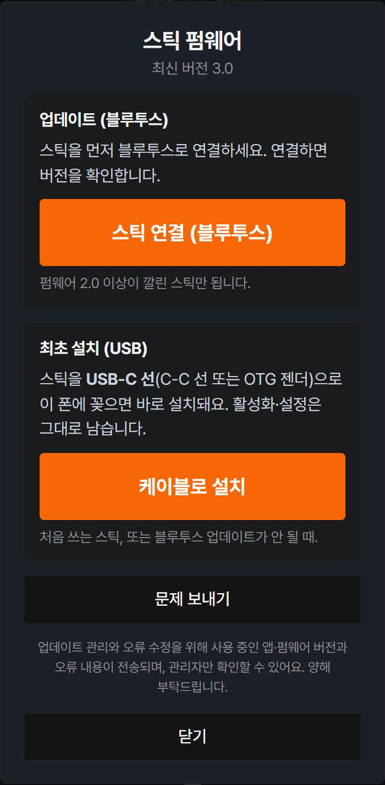
앱
앱을 열거나 다른 앱에서 돌아올 때 새 버전을 확인해서 바로 바뀝니다 (닫았다 다시 열 필요 없음). 측정·클리닝·길들이기 중이거나 전원공급기 출력이 켜져 있으면 끝난 뒤 앱으로 돌아올 때 바뀝니다. 버전은 설정 맨 아래에 있습니다.
앱을 끄거나 다른 앱으로 갈 때
- 앱을 닫으면 전원공급기 출력을 먼저 끄고, 스틱·전원공급기 연결을 끊고, 화면 켜짐 유지와 음성을 멈춥니다.
- 잠깐 다른 앱(카톡·전화)에 가는 것으로는 하던 측정·클리닝·길들이기가 멈추지 않습니다.
- 아무것도 안 하고 출력도 꺼진 채 3분 넘게 다른 앱에 있으면 연결을 쉬게 하고, 돌아오면 다시 연결합니다.
- 측정 기록과 설정은 지우지 않습니다.
14. 아이폰
- 무료 앱 Bluefy를 받아 그 안에서 jung86.github.io/panotrio/app.html을 엽니다.
- 된다: 스틱 연결, 파노측정, 기록, 설정, 활성화, 업데이트, 컨디션 점수(파노만으로).
- 안 된다: 전원공급기(DPS-150 / DPS100) USB 연결, 모터클리닝, 모터길들이기.
15. 문제 해결
- 스틱이 목록에 없어요: 블루투스·위치 켜짐, 크롬(아이폰은 Bluefy)인지 확인. 다른 휴대폰에 연결돼 있으면 안 보입니다. 스틱을 껐다 켜기.
- 측정이 시작 안 돼요: 스틱을 메인터넌스에 단단히 물렸는지, 진동 감도를 낮춰(민감) 보세요. 대기 시간 동안 진동이 끊기면 다시 기다립니다.
- 값이 2배로 나와요: 느린 모터는 범위를 LOW로.
- 점수가 안 나와요: "전원 불안정"이면 전류 제한을 올리거나 전원을 확인, "측정 불안정"이면 스틱을 다시 물리고 재세요.
- DPS-150 / DPS100이 안 보여요: 충전 전용 선이 아닌 데이터선인지, DPS 전원이 켜졌는지 확인하고 다시 꽂기. DPS100은 첫 목록에서 [취소] → 전체 목록에서 고르기 (7번).
- 폰으로 설치가 안 돼요: 데이터선인지, 초록 불이 깜빡이는 설치 모드인지 확인하고 선을 뺐다 다시 꽂은 뒤 한 번 더. 목록에 스틱이 없거나 계속 실패하면 컴퓨터로 설치하세요 (1번).
- 새 기능이 안 보여요: 앱을 완전히 닫았다 다시 열기.
앱 받는 곳(안드로이드·아이폰)은 다운로드 페이지에 있습니다.
설명서 2026-11-26